We are generally introduced to the idea of graphing curves by relating \(x\)-values to \(y\)-values through a function \(f\text{.}\) That is, we set \(y=f(x)\text{,}\) and plot lots of point pairs \((x,y)\) to get a good notion of how the curve looks. This method is useful but has limitations, not least of which is that curves that “fail the vertical line test” cannot be graphed without using multiple functions.
The previous two sections introduced and studied a new way of plotting points in the \(x,y\)-plane. Using parametric equations, \(x\) and \(y\) values are computed independently and then plotted together. This method allows us to graph an extraordinary range of curves. This section introduces yet another way to plot points in the plane: using polar coordinates.
Subsection10.4.1Polar Coordinates
Start with a point \(O\) in the plane called the pole (we will always identify this point with the origin). From the pole, draw a ray, called the initial ray (we will always draw this ray horizontally, identifying it with the positive \(x\)-axis). A point \(P\) in the plane is determined by the distance \(r\) that \(P\) is from \(O\text{,}\) and the angle \(\theta\) formed between the initial ray and the segment \(\overline{OP}\) (measured counter-clockwise). We record the distance and angle as an ordered pair \((r,\theta)\text{.}\) To avoid confusion with rectangular coordinates, we will denote polar coordinates with the letter \(P\text{,}\) as in \(P(r,\theta)\text{.}\) This is illustrated in Figure 10.4.2
Figure10.4.2.Illustrating polar coordinates
Practice will make this process more clear.
Example10.4.3.Plotting Polar Coordinates.
Plot the following polar coordinates:
\begin{equation*}
A = P(1,\pi/4) B=P(1.5,\pi) C = P(2,-\pi/3) D = P(-1,\pi/4)
\end{equation*}
To aid in the drawing, a polar grid is provided below. To place the point \(A\text{,}\) go out 1 unit along the initial ray (putting you on the inner circle shown on the grid), then rotate counter-clockwise \(\pi/4\) radians (or \(45^\circ\)). Alternately, one can consider the rotation first: think about the ray from \(O\) that forms an angle of \(\pi/4\) with the initial ray, then move out 1 unit along this ray (again placing you on the inner circle of the grid).
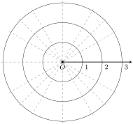
To plot \(B\text{,}\) go out \(1.5\) units along the initial ray and rotate \(\pi\) radians (\(180^\circ\)).
To plot \(C\text{,}\) go out 2 units along the initial ray then rotate clockwise\(\pi/3\) radians, as the angle given is negative.
To plot \(D\text{,}\) move along the initial ray “\(-1\)” units — in other words, “back up” 1 unit, then rotate counter-clockwise by \(\pi/4\text{.}\) The results are given in Figure 10.4.4.
Consider the following two points: \(A = P(1,\pi)\) and \(B = P(-1,0)\text{.}\) To locate \(A\text{,}\) go out 1 unit on the initial ray then rotate \(\pi\) radians; to locate \(B\text{,}\) go out \(-1\) units on the initial ray and don't rotate. One should see that \(A\) and \(B\) are located at the same point in the plane. We can also consider \(C=P(1,3\pi)\text{,}\) or \(D = P(1,-\pi)\text{;}\) all four of these points share the same location.
This ability to identify a point in the plane with multiple polar coordinates is both a “blessing” and a “curse.” We will see that it is beneficial as we can plot beautiful functions that intersect themselves (much like we saw with parametric functions). The unfortunate part of this is that it can be difficult to determine when this happens. We'll explore this more later in this section.
Subsection10.4.2Polar to Rectangular Conversion
It is useful to recognize both the rectangular (or, Cartesian) coordinates of a point in the plane and its polar coordinates. Figure 10.4.5 shows a point \(P\) in the plane with rectangular coordinates \((x,y)\) and polar coordinates \(P(r,\theta)\text{.}\) Using trigonometry, we can make the identities given in the following Key Idea.
Figure10.4.5.Converting between rectangular and polar coordinates
Key Idea10.4.6.Converting Between Rectangular and Polar Coordinates.
Given the polar point \(P(r,\theta)\text{,}\) the rectangular coordinates are determined by
So the rectangular coordinates are \((\sqrt{2}/2,\sqrt{2}/2) \approx (0.707,0.707)\text{.}\)
These points are plotted in Figure 10.4.8.(a). The rectangular coordinate system is drawn lightly under the polar coordinate system so that the relationship between the two can be seen.
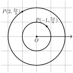(a)
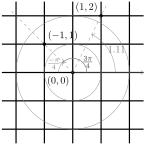(b)
Figure10.4.8.Plotting rectangular and polar points in Example 10.4.7
To convert the rectangular point \((1,2)\) to polar coordinates, we use the Key Idea to form the following two equations:
This is not the angle we desire. The range of \(\tan^{-1}(x)\) is \((-\pi/2,\pi/2)\text{;}\) that is, it returns angles that lie in the \(1\)st and \(4\)th quadrants. To find locations in the \(2\)nd and \(3\)rd quadrants, add \(\pi\) to the result of \(\tan^{-1}(x)\text{.}\) So \(\pi+(-\pi/4)\) puts the angle at \(3\pi/4\text{.}\) Thus the polar point is \(P(\sqrt{2},3\pi/4)\text{.}\) An alternate method is to use the angle \(\theta\) given by arctangent, but change the sign of \(r\text{.}\) Thus we could also refer to \((-1,1)\) as \(P(-\sqrt{2},-\pi/4)\text{.}\)
These points are plotted in Figure 10.4.8.(b). The polar system is drawn lightly under the rectangular grid with rays to demonstrate the angles used.
Subsection10.4.3Polar Functions and Polar Graphs
Defining a new coordinate system allows us to create a new kind of function, a polar function. Rectangular coordinates lent themselves well to creating functions that related \(x\) and \(y\text{,}\) such as \(y=x^2\text{.}\) Polar coordinates allow us to create functions that relate \(r\) and \(\theta\text{.}\) Normally these functions look like \(r=f(\theta)\text{,}\) although we can create functions of the form \(\theta = f(r)\text{.}\) The following examples introduce us to this concept.
Example10.4.9.Introduction to Graphing Polar Functions.
Describe the graphs of the following polar functions.
The equation \(r=1.5\) describes all points that are 1.5 units from the pole; as the angle is not specified, any \(\theta\) is allowable. All points 1.5 units from the pole describes a circle of radius 1.5. We can consider the rectangular equivalent of this equation; using \(r^2=x^2+y^2\text{,}\) we see that \(1.5^2=x^2+y^2\text{,}\) which we recognize as the equation of a circle centered at \((0,0)\) with radius 1.5. This is sketched in Figure 10.4.10.
The equation \(\theta = \pi/4\) describes all points such that the line through them and the pole make an angle of \(\pi/4\) with the initial ray. As the radius \(r\) is not specified, it can be any value (even negative). Thus \(\theta = \pi/4\) describes the line through the pole that makes an angle of \(\pi/4 = 45^\circ\) with the initial ray. We can again consider the rectangular equivalent of this equation. Combine \(\tan(\theta) =y/x\) and \(\theta =\pi/4\text{:}\)
\begin{equation*}
\tan(\pi) /4 = y/x \Rightarrow x\tan(\pi) /4 = y \Rightarrow y = x\text{.}
\end{equation*}
The basic rectangular equations of the form \(x=h\) and \(y=k\) create vertical and horizontal lines, respectively; the basic polar equations \(r= h\) and \(\theta =\alpha\) create circles and lines through the pole, respectively. With this as a foundation, we can create more complicated polar functions of the form \(r=f(\theta)\text{.}\) The input is an angle; the output is a length, how far in the direction of the angle to go out.
We sketch these functions much like we sketch rectangular and parametric functions: we plot lots of points and “connect the dots” with curves. We demonstrate this in the following example.
Example10.4.11.Sketching Polar Functions.
Sketch the polar function \(r=1+\cos(\theta)\) on \([0,2\pi]\) by plotting points.
A common question when sketching curves by plotting points is “Which points should I plot?” With rectangular equations, we often choose “easy” values — integers, then add more if needed. When plotting polar equations, start with the “common” angles — multiples of \(\pi/6\) and \(\pi/4\text{.}\)Figure 10.4.12 gives a table of just a few values of \(\theta\) in \([0,\pi]\text{.}\)
Consider the point \(P(2,0)\) determined by the first line of the table. The angle is 0 radians — we do not rotate from the initial ray — then we go out 2 units from the pole. When \(\theta=\pi/6\text{,}\)\(r = 1.866\) (actually, it is \(1+\sqrt{3}/2\)); so rotate by \(\pi/6\) radians and go out 1.866 units.
The graph shown uses more points, connected with straight lines. (The points on the graph that correspond to points in the table are signified with larger dots.) Such a sketch is likely good enough to give one an idea of what the graph looks like.
\(\theta\)
\(r=1+\cos(\theta)\)
\(0\)
\(2\)
\(\pi/6\)
\(1.86603\)
\(\pi/2\)
\(1\)
\(4\pi/3\)
\(0.5\)
\(7 \pi/4\)
\(1.70711\)
(a)
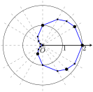(b)
Figure10.4.12.Graphing a polar function in Example 10.4.11 by plotting points
Technology Note: Plotting functions in this way can be tedious, just as it was with rectangular functions. To obtain very accurate graphs, technology is a great aid. Most graphing calculators can plot polar functions; in the menu, set the plotting mode to something like polar or POL, depending on one's calculator. As with plotting parametric functions, the viewing “window” no longer determines the \(x\)-values that are plotted, so additional information needs to be provided. Often with the “window” settings are the settings for the beginning and ending \(\theta\) values (often called \(\theta_{\text{ min } }\) and \(\theta_{\text{ max } }\)) as well as the \(\theta_{\text{ step } }\) — that is, how far apart the \(\theta\) values are spaced. The smaller the \(\theta_{\text{ step } }\) value, the more accurate the graph (which also increases plotting time). Using technology, we graphed the polar function \(r=1+\cos(\theta)\) from Example 10.4.11 in Figure 10.4.13.
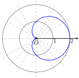
Figure10.4.13.Using technology to graph a polar function
Example10.4.14.Sketching Polar Functions.
Sketch the polar function \(r=\cos(2\theta)\) on \([0,2\pi]\) by plotting points.
We start by making a table of \(\cos(2\theta)\) evaluated at common angles \(\theta\text{,}\) as shown in Figure 10.4.15. These points are then plotted in Figure 10.4.16.(a). This particular graph “moves” around quite a bit and one can easily forget which points should be connected to each other. To help us with this, we numbered each point in the table and on the graph.
Table10.4.15.Table of points for plotting a polar curve in Example 10.4.14
Pt.
\(\theta\)
\(\cos(2\theta)\)
\(1\)
\(0\)
\(1\)
\(2\)
\(\pi/6\)
\(0.5\)
\(3\)
\(\pi/4\)
\(0\)
\(4\)
\(\pi/3\)
\(-0.5\)
\(5\)
\(\pi/2\)
\(-1\)
\(6\)
\(2\pi/3\)
\(-0.5\)
\(7\)
\(3\pi/4\)
\(0\)
\(8\)
\(5\pi/6\)
\(0.5\)
\(9\)
\(\pi\)
\(1\)
\(10\)
\(7\pi/6\)
\(0.5\)
\(11\)
\(5\pi/4\)
\(0\)
\(12\)
\(4\pi/3\)
\(-0.5\)
\(13\)
\(3\pi/2\)
\(-1\)
\(14\)
\(5\pi/3\)
\(-0.5\)
\(15\)
\(7\pi/4\)
\(0\)
\(16\)
\(11\pi/6\)
\(0.5\)
\(17\)
\(2\pi\)
\(1\)
Using more points (and the aid of technology) a smoother plot can be made as shown in Figure 10.4.16.(b). This plot is an example of a rose curve.
It is sometimes desirable to refer to a graph via a polar equation, and other times by a rectangular equation. Therefore it is necessary to be able to convert between polar and rectangular functions, which we practice in the following example. We will make frequent use of the identities found in Key Idea 10.4.6.
Example10.4.17.Converting between rectangular and polar equations.
Replace \(y\) with \(r\sin(\theta)\) and replace \(x\) with \(r\cos(\theta)\text{,}\) giving:
\begin{align*}
y \amp =x^2\\
r\sin(\theta) \amp = r^2\cos^2(\theta)\\
\frac{\sin(\theta) }{\cos^2(\theta) } \amp = r
\end{align*}
We have found that \(r=\sin(\theta) /\cos^2(\theta) = \tan(\theta) \sec(\theta)\text{.}\) The domain of this polar function is \((-\pi/2,\pi/2)\text{;}\) plot a few points to see how the familiar parabola is traced out by the polar equation.
We again replace \(x\) and \(y\) using the standard identities and work to solve for \(r\text{:}\)
This function is valid only when the product of \(\cos(\theta) \sin(\theta)\) is positive. This occurs in the first and third quadrants, meaning the domain of this polar function is \((0,\pi/2) \cup (\pi,3\pi/2)\text{.}\) We can rewrite the original rectangular equation \(xy=1\) as \(y=1/x\text{.}\) This is graphed in Figure 10.4.18; note how it only exists in the first and third quadrants.
There is no set way to convert from polar to rectangular; in general, we look to form the products \(r\cos(\theta)\) and \(r\sin(\theta)\text{,}\) and then replace these with \(x\) and \(y\text{,}\) respectively. We start in this problem by multiplying both sides by \(\sin(\theta) -\cos(\theta)\text{:}\)
\begin{align*}
r \amp = \frac{2}{\sin(\theta) -\cos(\theta) }\\
r(\sin(\theta) -\cos(\theta) ) \amp = 2\\
r\sin(\theta) -r\cos(\theta) \amp = 2. \qquad \text{ Now replace with \(y\) and \(x\): }\\
y-x \amp = 2\\
y \amp = x+2\text{.}
\end{align*}
The original polar equation, \(r=2/(\sin(\theta) -\cos(\theta) )\) does not easily reveal that its graph is simply a line. However, our conversion shows that it is. The upcoming gallery of polar curves gives the general equations of lines in polar form.
By multiplying both sides by \(r\text{,}\) we obtain both an \(r^2\) term and an \(r\cos(\theta)\) term, which we replace with \(x^2+y^2\) and \(x\text{,}\) respectively.
The circle is centered at \((1,0)\) and has radius 1. The upcoming gallery of polar curves gives the equations of some circles in polar form; circles with arbitrary centers have a complicated polar equation that we do not consider here.
Some curves have very simple polar equations but rather complicated rectangular ones. For instance, the equation \(r=1+\cos(\theta)\) describes a cardioid (a shape important the sensitivity of microphones, among other things; one is graphed in the gallery in the Limaçon section). It's rectangular form is not nearly as simple; it is the implicit equation \(x^4+y^4+2x^2y^2-2xy^2-2x^3-y^2=0\text{.}\) The conversion is not “hard,” but takes several steps, and is left as a problem in the Exercise section.
Gallery of Polar Curves
There are a number of basic and “classic” polar curves, famous for their beauty and/or applicability to the sciences. This section ends with a small gallery of some of these graphs. We encourage the reader to understand how these graphs are formed, and to investigate with technology other types of polar functions.
Lines
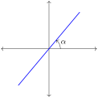(a)Through the origin: \(\theta = \alpha\)
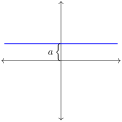(b)Horizontal line: \(r=a\csc(\theta)\)
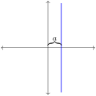(c)Vertical line: \(r=a\sec(\theta)\)
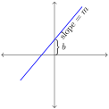(d)Not through origin: \(\ds r=\frac{b}{\sin(\theta) -m\cos(\theta)}\)
Figure10.4.19.
Circles and Spirals
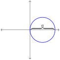(a)Centered on \(x\)-axis: \(r=a\cos(\theta)\)
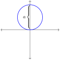(b)Centered on \(y\)-axis: \(r=a\sin(\theta)\)
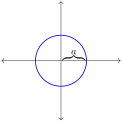(c)Centered on origin: \(r=a\)
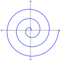(d)Archimedean spiral: \(r=\theta\)
Figure10.4.20.
Limaçons
Symmetric about \(x\)-axis: \(r=a\pm b\cos(\theta)\)
Symmetric about \(y\)-axis: \(r=a\pm b\sin(\theta)\text{;}\)\(a,b \gt 0\)
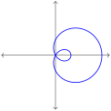(a)With inner loop: \(\ds \frac ab \lt 1\)
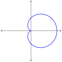(b)Cardioid: \(\ds \frac ab=1\)
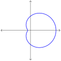(c)Dimpled: \(\ds 1\lt \frac ab \lt 2\)
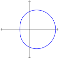(d)Convex: \(\ds \frac ab \gt 2\)
Figure10.4.21.
Rose Curves
Symmetric about \(x\)-axis: \(r=a \cos(n\theta)\)
Symmetric about \(y\)-axis: \(r=a\sin(n\theta)\)
Curve contains \(2n\) petals when \(n\) is even and \(n\) petals when \(n\) is odd.
Earlier we discussed how each point in the plane does not have a unique representation in polar form. This can be a “good” thing, as it allows for the beautiful and interesting curves seen in the preceding gallery. However, it can also be a “bad” thing, as it can be difficult to determine where two curves intersect.
Example10.4.24.Finding points of intersection with polar curves.
Determine where the graphs of the polar equations \(r=1+3\cos(\theta)\) and \(r=\cos(\theta)\) intersect.
As technology is generally readily available, it is usually a good idea to start with a graph. We have graphed the two functions in Figure 10.4.25.(a); to better discern the intersection points, Figure 10.4.25.(b) zooms in around the origin.
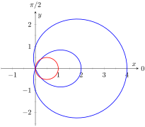(a)
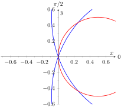(b)
Figure10.4.25.Graphs to help determine the points of intersection of the polar functions given in Example 10.4.24
We start by setting the two functions equal to each other and solving for \(\theta\text{:}\)
(There are, of course, infinite solutions to the equation \(\cos(\theta) =-1/2\text{;}\) as the limaçon is traced out once on \([0,2\pi]\text{,}\) we restrict our solutions to this interval.)
We need to analyze this solution. When \(\theta = 2\pi/3\) we obtain the point of intersection that lies in the \(4\)th quadrant. When \(\theta = 4\pi/3\text{,}\) we get the point of intersection that lies in the second quadrant. There is more to say about this second intersection point, however. The circle defined by \(r=\cos(\theta)\) is traced out once on \([0,\pi]\text{,}\) meaning that this point of intersection occurs while tracing out the circle a second time. It seems strange to pass by the point once and then recognize it as a point of intersection only when arriving there a “second time.” The first time the circle arrives at this point is when \(\theta = \pi/3\text{.}\) It is key to understand that these two points are the same: \((\cos(\pi/3),\pi/3)\) and \((\cos(4\pi/3),4\pi/3)\text{.}\)
To summarize what we have done so far, we have found two points of intersection: when \(\theta=2\pi/3\) and when \(\theta=4\pi/3\text{.}\) When referencing the circle \(r=\cos(\theta)\text{,}\) the latter point is better referenced as when \(\theta=\pi/3\text{.}\)
There is yet another point of intersection: the pole (or, the origin). We did not recognize this intersection point using our work above as each graph arrives at the pole at a different \(\theta\) value.
A graph intersects the pole when \(r=0\text{.}\) Considering the circle \(r=\cos(\theta)\text{,}\)\(r=0\) when \(\theta = \pi/2\) (and odd multiples thereof, as the circle is repeatedly traced). The limaçon intersects the pole when \(1+3\cos(\theta) =0\text{;}\) this occurs when \(\cos(\theta) = -1/3\text{,}\) or for \(\theta = \cos^{-1}(-1/3)\text{.}\) This is a nonstandard angle, approximately \(\theta = 1.9106 = 109.47^\circ\text{.}\) The limaçon intersects the pole twice in \([0,2\pi]\text{;}\) the other angle at which the limaçon is at the pole is the reflection of the first angle across the \(x\)-axis. That is, \(\theta = 4.3726 = 250.53^\circ\text{.}\)
If all one is concerned with is the \((x,y)\) coordinates at which the graphs intersect, much of the above work is extraneous. We know they intersect at \((0,0)\text{;}\) we might not care at what \(\theta\) value. Likewise, using \(\theta =2\pi/3\) and \(\theta=4\pi/3\) can give us the needed rectangular coordinates. However, in the next section we apply calculus concepts to polar functions. When computing the area of a region bounded by polar curves, understanding the nuances of the points of intersection becomes important.
Exercises10.4.4Exercises
Terms and Concepts
1.
In your own words, describe how to plot the polar point \(P(r,\theta)\text{.}\)
2.
True or False? When plotting a point with polar coordinate \(P(r,\theta)\text{,}\)\(r\) must be positive.
True
False
3.
True or False? Every point in the Cartesian plane can be represented by a polar coordinate.
True
False
4.
True or False? Every point in the Cartesian plane can be represented uniquely by a polar coordinate.
True
False
Problems
5.
Plot the points with the given polar coordinates.
\(\displaystyle A=P(2,0)\)
\(\displaystyle B=P(1,\pi)\)
\(\displaystyle C=P(-2,\pi/2)\)
\(\displaystyle D=P(1,\pi/4)\)
6.
Plot the points with the given polar coordinates.
\(\displaystyle A=P(2,3\pi)\)
\(\displaystyle B=P(1,-\pi)\)
\(\displaystyle C=P(1,2)\)
\(\displaystyle D=P(1/2,5\pi/6)\)
7.
For each of the given points give two sets of polar coordinates that identify it, where \(0\leq \theta\leq 2\pi\text{.}\)
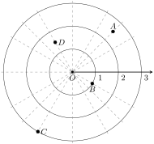
8.
For each of the given points give two sets of polar coordinates that identify it, where \(-\pi\lt \theta\leq \pi\text{.}\)
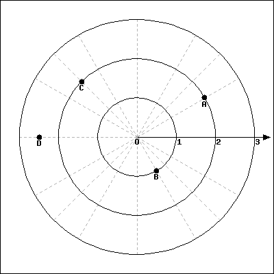
Point
\((positive) r_1\)
\(\theta_1\)
\(r_2\)
\((negative) \theta_2\)
\(A\)
\(B\)
\(C\)
\(D\)
9.
Convert each of the following polar coordinates to rectangular, and each of the following rectangular coordinates to polar.
\(A=P(2,\pi/4)\)
\((x,y)=\)
\(B=P(2,-\pi/4)\)
\((x,y)=\)
\(C=(2,-1)\)
\(P(r,\theta)=P\)
\(D=(-2,1)\)
\(P(r,\theta)=P\)
10.
Convert each of the following polar coordinates to rectangular, and each of the followingrectangular coordinates to polar.
\(A=P(3,\pi)\)
\((x,y)=\)
\(B=P(1,2\pi/3)\)
\((x,y)=\)
\(C=(0,4)\)
\(P(r,\theta)=P\)
\(D=(1,-\sqrt{3})\)
\(P(r,\theta)=P\)
Exercise Group.
In the following exercises, graph the polar function on the given interval.
In the following exercises, convert the polar equation to a rectangular equation.
31.
Convert the polar equation to a rectangular equation.
\(r=6\cos(\theta)\)
32.
Convert the polar equation to a rectangular equation.
\(r=-4\sin(\theta)\)
33.
Convert the polar equation to a rectangular equation.
\(r=\cos(\theta) +\sin(\theta)\)
34.
Convert the polar equation to a rectangular equation.
\(r=\dfrac{7}{5\sin(\theta)-2\cos(\theta)}\)
35.
Convert the polar equation to a rectangular equation.
\(r=\dfrac{3}{\cos(\theta)}\)
36.
Convert the polar equation to a rectangular equation.
\(r=\dfrac{4}{\sin(\theta)}\)
37.
\(\ds r=\tan(\theta)\)
38.
\(\ds r=\cot\theta\)
39.
Convert the polar equation to a rectangular equation.
\(r=2\)
40.
Convert the polar equation to a rectangular equation.
\(\theta=\pi/6\)
Exercise Group.
In the following exercises, convert the rectangular equation to a polar equation.
41.
Convert the rectangular equation to a polar equation. Type ‘theta’ for \(\theta\text{.}\)
\(y=x\)
42.
Convert the rectangular equation to a polar equation. Type ‘theta’ for \(\theta\text{.}\)
\(y=4x+7\)
43.
Convert the rectangular equation to a polar equation. Type ‘theta’ for \(\theta\text{.}\)
\(x=5\)
44.
Convert the rectangular equation to a polar equation. Type ‘theta’ for \(\theta\text{.}\)
\(y=5\)
45.
Convert the rectangular equation to a polar equation. Type ‘theta’ for \(\theta\text{.}\)
\(x=y^2\)
46.
\(\ds x^2y=1\)
47.
Convert the rectangular equation to a polar equation. Type ‘theta’ for \(\theta\text{.}\)
\(x^2+y^2=7\)
48.
\(\ds (x+1)^2+y^2=1\)
Exercise Group.
In the following exercises, find the points of intersection of the polar graphs.
49.
Find the points where \(r=\sin(2\theta)\) intersects \(r=\cos(\theta)\) on \([0,\pi]\text{,}\) expressed in polar coordinates with notation \(P(r,\theta)\text{.}\)
50.
\(r=\cos(2\theta)\) and \(r=\cos(\theta)\) on \([0,\pi]\)
51.
Find the points where \(r=2\cos(\theta)\) intersects \(r=2\sin(\theta)\) on \([0,\pi]\text{,}\) expressed in polar coordinates with notation \(P(r,\theta)\text{.}\)
52.
\(r=\sin(\theta)\) and \(r=\sqrt{3}+3\sin(\theta)\) on \([0,2\pi]\)
53.
\(r=\sin(3\theta)\) and \(r=\cos(3\theta)\) on \([0,\pi]\)
54.
Find the points where \(r=3\cos(\theta)\) intersects \(r=1+\cos(\theta)\) on \([-\pi,\pi]\text{,}\) expressed in polar coordinates with notation \(P(r,\theta)\text{.}\)
55.
\(r=1\) and \(r=2\sin(2\theta)\) on \([0,2\pi]\)
56.
\(r=1-\cos(\theta)\) and \(r=1+\sin(\theta)\) on \([0,2\pi]\)
57.
Pick a integer value for \(n\text{,}\) where \(n\neq 2,3\text{,}\) and use technology to plot \(\ds r=\sin\left(\frac mn\theta\right)\) for three different integer values of \(m\text{.}\) Sketch these and determine a minimal interval on which the entire graph is shown.
58.
Create your own polar function, \(r=f(\theta)\) and sketch it. Describe why the graph looks as it does.